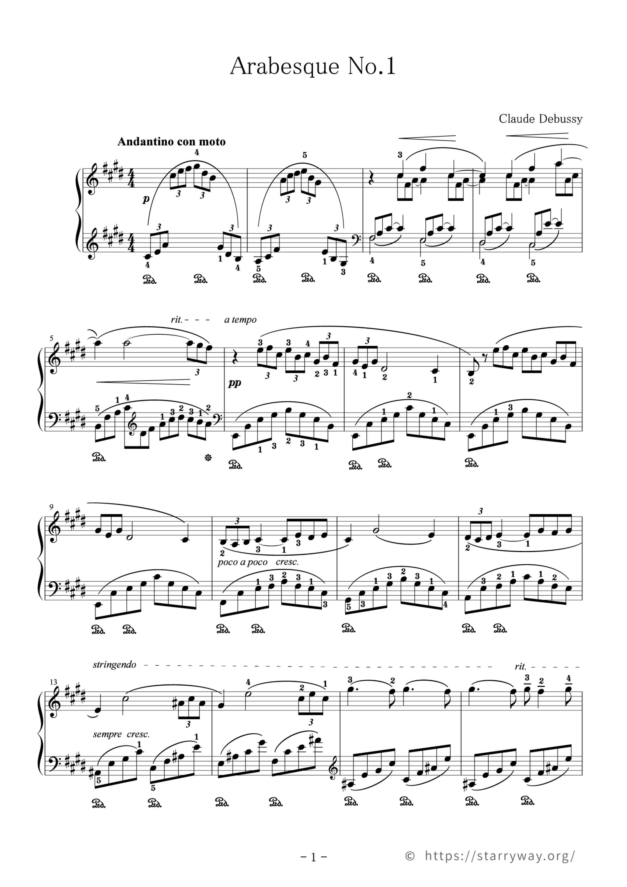

Right hand
PolyPulse Practice
拍子
/
Left hand
左手
Cycle
1拍の中の 3 : 2
Bar
4/4・4分

Arabesque No.1
Right hand
Left hand
Cycle
Bar

Arabesque No.1
PolyPulse Practiceは、3:2や4:3のようなポリリズムを、右手と左手で別々の音として聞きながら練習するためのリズムツールです。 ピアノ、打楽器、作曲、ソルフェージュなど、複数の拍の流れを体で覚えたいときに使えます。
3:2では、同じ時間の中に3つの刻みと2つの刻みが同時に入ります。最初は片手だけで太ももを叩き、次に反対の手だけを確認し、最後に両手を合わせるとリズムの位置をつかみやすくなります。
メトロノームモードでは、4分、8分、3連、16分などの細分を切り替えられます。BPMや拍子を保存できるので、日々の練習の出発点をすぐに再現できます。
Arabesque No.1モードでは、小節を選んで右手と左手のリズムだけを鳴らせます。音程ではなく発音位置に集中できるので、3連符と左手の流れを体で覚える練習に向いています。